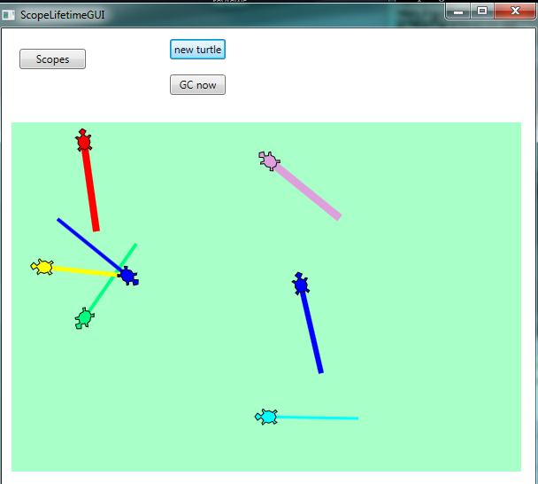
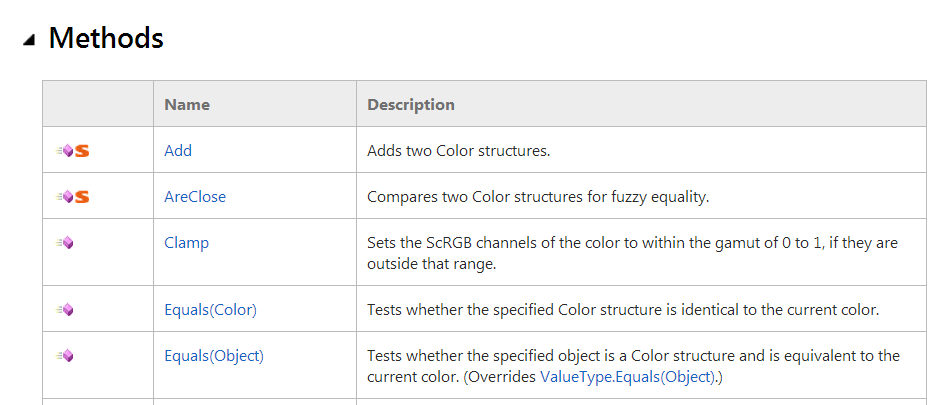

24. Scope and Lifetime¶
24.1. Scope¶
The scope of a name is the region of program code in which a name can be used without the need for extra qualification.
There are two important scopes in C#:
- Local scope refers to names defined within a method or a within a block within a method.
- Class-level scope refers to all the names defined within the current class (but this excludes any local names that are defined inside methods of the class.)
Let’s look at the RandomDemoGUI program of the previous chapter again.
The class RandomDemoGUI extends from line 6 to line 29.
Within the class
there are 3 class-level definitions: one variable called
myRandomSource is defined on line 8, and two methods are defined on lines
10 and 16 (one of these methods is the constructor). These are the class-level scope names.
In addition, we have two local variables defined on lines 20 and 21. They are
local to the btnRandom_Click method. On line 16, that method also takes
two parameters with names sender and e. Parameters of a method are
in the local scope of the method in which they are defined.
What this means is that the four names defined in the btnRandom_Click method
(i.e. sender, e, card1, card2) can only be used within the
method where they’re defined. They’re local.
You would get an error if you attempted to assign
something to card1 at line 13, for example.
But class-level names can be accessed from anywhere in the class, including
from inside methods of the class. So at lines 13, 20, 21 and 24 we can
use myRandomSource.
Now what would happen if we moved the definition at line 8 into the constructor method at line 10? It would become a local definition within the constructor, rather than a class-level definition. So within the constructor we’d still be able to access it, but lines 20, 21 and 24 would give errors: The name ‘myRandomSource’ does not exist in the current context.
24.2. Scopes can nest inside each other¶
When we said “local scope” or “class-level scope” we made a bit of a simplification. It is slightly more complicated that that. Although we’ve not seen examples yet, one can define one class inside another class, so we could nest classes very deeply. (We do not have any use for so-called inner-classes, or nested classes, in this book, but we should know that such things can exist!)
Additionally, C# allows us to define variables inside a block of code (recall that a block is a group of statements enclosed in braces). The scope rule is then that the name is only visible within the block where it has been defined.
In another twist of convenience, C# also allows us to define variables as part of
a for or foreach statement. In this case the scope of the defined variable
is the statement and its loop body.
With classes or scopes that are nested within each other, there is a potential
ambiguity: if we have a class-level variable called num, and we also call one
of our parameters to a method num, then we need to be clear about
which num we’re referring to when we use it!
The scope lookup rules are that the most closely nested scope where num is defined
is the one that will be used. Let’s look at this very contrived example:
Lines 1 and 2 define two class-level variables with initializers. But method f1 names
its parameter v1. This means that within the method body, any reference to v1
uses the local name, not the class-level v1. So on line 8 (where we use v1), the
number of times the loop body is executed depends on the argument passed to it from
the call site. (At line 32 we have a call site that passes the value 5 to the method.)
At line 31 we define a new local variable v2. This definition hides the class-level
variable defined at line 2, and when v2 is used on line 32, it uses the local v2.
There are a number of local variables defined inside method f1. We have the definition
of result on line 6 (and its uses on lines 10, 17, 23 and 26). We also have a definition
of variable i as part of the for loop at line 8. It’s scope is lines 8 - 11, and cannot
be used outside that scope. There are two blocks at lines 13-18, and 20-24. Each block
has some definitions of new variables that are local to the blocks. We’ve deliberately
defined variables i and d1 at lines 21 and 22 to make the point that these are
different variables (in different scopes) from the earlier i defined in the loop,
and the d1 variable defined at line 15.
On line 10 we use variable v2. It is not locally defined, so the scope lookup
rule says “use the variable at the closest enclosing scope”. In this case, the
class-level variable at line 2 is used. Note that although line 31 also defines
a variable called v2, that variable is not the one referred to at line 10!
You should ensure that you can trace through the code and determine what value the method will return. (Check yourself by copying the code and running it.)
If you want some more advanced information about scopes, take a look at http://msdn.microsoft.com/en-us/library/aa691132(v=vs.10).aspx
24.3. Lifetimes of objects and variables¶
Each time you click the button in the sample above, you’ll get a message box showing the value 42. But wait! We’re using a random number generator at lines 15 and 16 to throw two dice which we add to the result. Why are we not getting random results?
Every object and variable in a program has a lifetime. It gets created (or instantiated) at some particular moment in time, and then at some later time it dies.
Variables that are defined within a method or a block only live while the method or
block is being executed. So calling method f1 creates local parameter v1
and local variable result. When f1 returns, those variables are destroyed.
Similarly, in the loop, the variable i is created when the loop starts running, and
it is destroyed when the loop exits. And the same is true for the blocks of code at lines
14-18, and 20-24.
What this means is that we’re not creating a single random number generator here: we’re creating a brand new one each time we execute line 14. And because we’ve given it a seed value as an argument in line 14, we will always get the same throws for the two dice.
If we moved line 14 out of the method f1 and put its definition and instantiation
at line 3, say, it would become a class-level variable instead of a local variable.
Now the behaviour of our program would change. The random number generator would be created
when the class was created (i.e. just before our window first appears, if this code is part
of a WPF window), and its lifetime would only end when the window’s lifetime ended.
Class-level instance variables (i.e. not variables that are static) have a lifetime that is the same as the lifetime of the object they belong to.
For writing the kinds of event-based GUI programs that we work with in this book, what this means is that if we want something to persist across multiple events, we should define it as a class-level variable. So if we need to count how many times a particular button is clicked, we need that counter to keep its value between clicks: it needs to be a class-level variable.
24.4. Objects can take some time to die¶
We’ve mentioned earlier that we have two kinds of types in C# — value types and reference types.
A value type (like int, double or Point) is stored directly in a variable. Variables
are instantly destroyed when control exits the scope in which they are defined.
But a reference type creates a reference, or a pointer, to the object it refers to. Our
Turtle is a reference type, Window is a reference type, and Random is a reference type.
With reference types, the object is stored elsewhere in a region of memory called the heap. We’ve also seen that when we pass a reference type as an argument to a method, or when we assign one Turtle to another, we can create aliases — we can have more than one reference referring to the same object.
Objects become inaccessible when there are no longer any references pointing to them. So
looking at our program above, on line 14, the variable rng is created, a new Random object
is created in the heap, and rng is made to reference it. After passing line 18 in the
program, the rng variable is destroyed. So at this point the object in the heap becomes
inaccessible — no references point to it. We call inaccessible objects garbage. The
object is still “alive”, however.
Periodically, C# runs a garbage collector. It’s job is to kill any garbage objects in the heap, and to recycle the memory so that the memory can be used again for new objects.
This is a little like some file or email systems
Often when we delete a file or email it gets moved to a recycle bin or a deleted folder. So it is not dead yet — just inaccessible from our “normal” filing system or inbox. When we do get around to emptying the recycle bin or our deleted folder, it is finally gone forever.
So for reference types, lifetimes are a bit more complicated than they are for value types.
Normally we need not concern ourselves with lifetimes: C# will handle most situations very nicely in the background. But we can have some fun exploring the mechanism, and we can build a really good understanding of the inner workings by doing this.
Let’s go back and play with another Turtle program. When we create a Turtle, we create an object on the heap, but we also create some graphical lines and shapes on our playground canvas. When our turtle becomes inaccessible it won’t die immediately — it hangs around until the garbage collector decides it is time to clean up and kill off all inaccessible objects. Just before a turtle dies, it gets an event from the garbage collector that allows it to do its “final actions”. (Technically, we call the handler a destructor, the lifetime opposite of the constructor.) As its final action, a turtle will removes its shapes (lines, footprints, etc.) from the playground. This gives us a nice visual way for us to “see when the turtle actually dies”.

Each time the button is clicked we create a new turtle. We start it off at a random position in the playground, on a random heading, with a random brush width, and a random brush colour. Then we draw a single line.
Each time we click the button we get a new turtle on the heap, and will soon have
something looking this screen-shot. But each time we exit the
handler, we destroy variable tess — so we lose the reference to the turtle,
and it becomes inaccessible, or garbage. (But not dead yet, so we can still see its shapes
on the playground.) After a while the garbage collector springs
into action, and all the shapes suddenly disappear from the
playground as the inaccessible turtles die.
The garbage collector kicks in at unpredictable times — sometimes when we resize our window, sometimes when we click the button, sometimes when we just move the mouse over the window, occasionally when we’re just sitting back watching our screen.
C# provides a GC class (in the System namespace) that provides a method
for the programmer to explicitly ask for garbage collection. So we can add an
extra button to our GUI, and give it a handler like this:
This lets us explicitly force a garbage collection whenever we want one.
Let us summarize the main idea of this section again: variables and objects have lifetimes. In the case of reference types, the objects in the heap become inaccessible, often because the variables that reference them are destroyed. But the object itself might live on a while longer in the heap, until the garbage collector gets around to cleaning it up and reclaiming its memory.
24.5. Static members, static classes¶
We’ve talked about instances of a type: tess and alex are instances of type Turtle.
button1 and button2 could be instances of type Button. And every instance
has its own members (fields, variables, or methods),
But sometimes we want to have members that don’t apply to the object, but they apply to the type. Let us suppose we have 10 instances of Samsung S5 phones. They’ll each have their own settings: phone numbers, address books, and so on. But there can be other information that applies to the type of phone, not just to individual instances. For example, the screen and camera resolutions, and the size and weight of the phone apply to all Samsung S5 phones.
A member (property, method, variable) can be defined to be static in a class. This means that it will be associated with the class, not with the objects that are instantiated from the class.
Let’s see some examples that we know well already:
Math is a class in namespace System. It provides static methods like
Math.Sqrt and Math.Cos that we can call. It also has a few static
fields (Math.E and Math.PI) that hold some useful constants.
The important point is that we don’t have to instantiate an object of type Math
and then call methods of the instance: we use the methods directly from the class.
Static classes are classes that cannot be instantiated.
They exist only for their static members. Math is
a static class. You cannot create an instance of a Math object.
We’ve also used methods from the static class System.Convert, e.g.
Convert.Int32("1234").
Some other classes we’ve seen have static members, but they can also
be instantiated. (So they have static members, but they’re not static classes.)
For example, Color (from the namespace System.Windows.Media)
is a class like this:
In the upper part of the image we see the IntelliSense showing us
members that are static: the class name is Color, and IntelliSense
pops up the static members.
In the lower part of the image we’ve instantiated a colour instance
called c1. Now IntelliSense shows us the members that belong to
the instance. They’re not the same as the static members.
The help files for C# also use little icons to signal whether members are static or whether they belong to an instance. In the fragment of the help page from http://msdn.microsoft.com/en-us/library/system.windows.media.color.aspx notice the big red static markers that tell us that the first two methods belong the the class, the others belong to instances.
24.6. Glossary¶
- scope
- The region of program code in which a name can be used without the need for extra qualification.
- class-level scope
- Any name defined directly within a class, and visible to methods within the class.
- garbage
- Any object that has become inaccessible.
- garbage collection
- A periodic process that reclaims and recycles the memory used by inaccessible objects.
- heap
- An area of memory where objects are created and where they live.
- inaccessible object
- An object which has no references from the program pointing to it. This happens because a variable can be reassigned, and made to point to a different object, or because a variable gets destroyed when control leaves the scope in which it is defined.
- lifetime
- The time from when a variable or an object is created (e.g. from control entering a new scope or from object instantiation) until it is destroyed (from control exiting the scope, or the garbage collector reclaiming the memory associated with the object.)
- local scope
- The closest enclosing block or method in which names are defined.
- static class
- A class that cannot be instantiated.
Mathis a static class. - static member
- A member that is accessible via the class name, not via an instance object.
Canvas.GetLeftin our More Event Handling chapter is one example.
24.7. Exercises¶
The
GCclass can tell us how much heap memory our program is using. Create a button on your GUI, and bind it to a handler like this so that the memory usage gets shown in the title bar of the window:1 2 3 4
private void btnMemUsage_Click(object sender, RoutedEventArgs e) { this.Title = string.Format("Memory in use = {0}", GC.GetTotalMemory(false)); }
What is interesting is that each click of the button consumes quite a large number of bytes of memory (for processing the event, passing the arguments to the handler, redrawing the window, and so on.) Notice that if you click enough times the garbage collector will recover the memory.
Do an experiment to measure how much memory gets used each time we create a new array of int. Because there is a lot of system overhead on every click and redraw of the window, we need to find some sensible way of controlling our experiment. Here is a suggestion:
1 2 3 4
long m1 = GC.GetTotalMemory(false); int[] xs = new int[10000]; long m2 = GC.GetTotalMemory(false); this.Title = string.Format("Memory for the array = {0}", m2-m1);
Repeat the above experiment, but this time allocate an array of double.